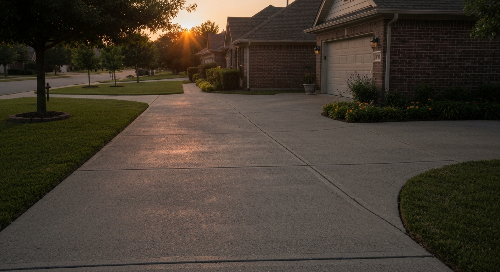
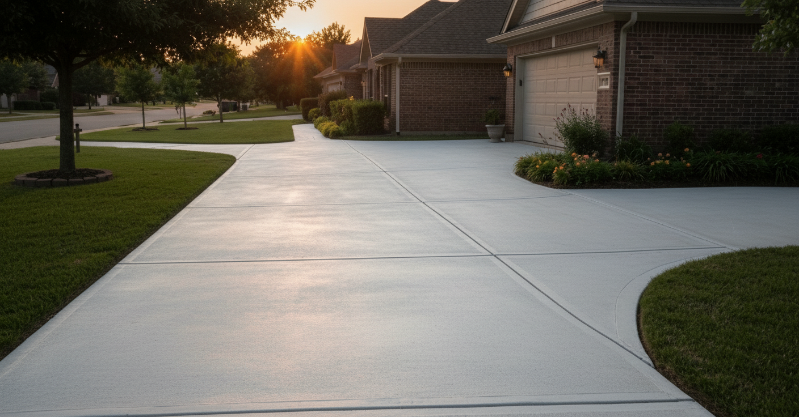
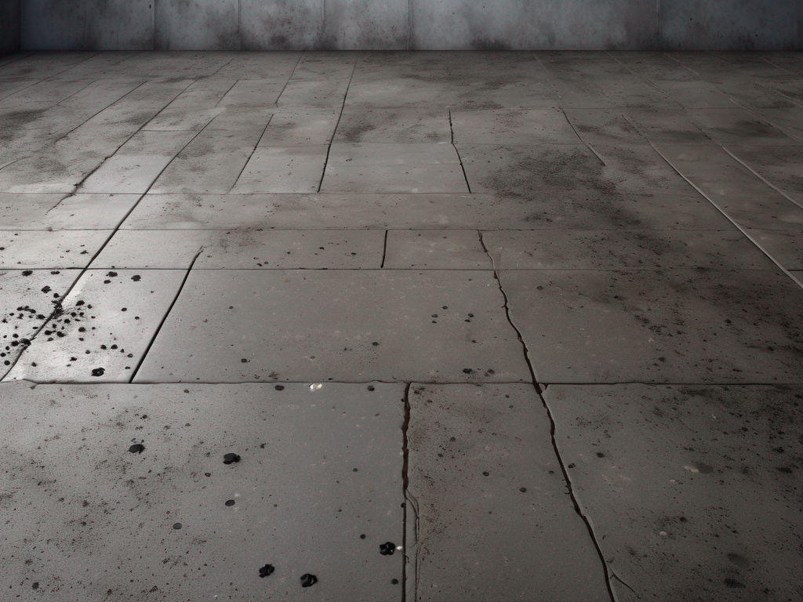
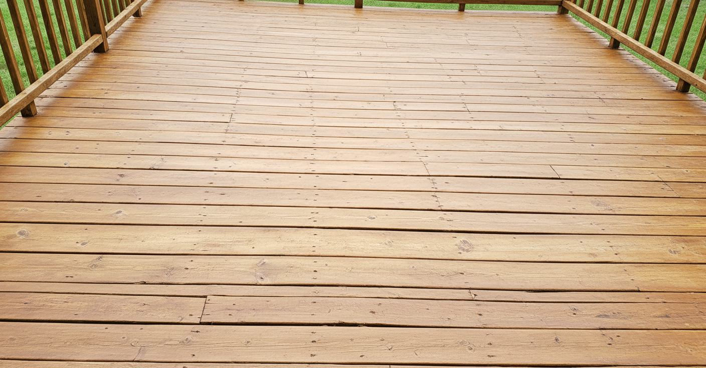

Knoxville Pressure Washing — Curb Appeal Restored in Hours. Free Estimates.
Professional exterior cleaning for Knoxville homes — house washing, driveways, decks, and more. Fully insured, eco-friendly solutions, same-week scheduling available.
Your House Looks Older Than It Is
That green tint on the north-facing siding isn't dirt — it's algae, and it's been growing there for two or three seasons. The black streaks on your roof or driveway are the same story: biological growth that eats into surfaces and gets darker every year. And the deck that used to look great when you had friends over has gone from weathered to just grimy.
None of this means your home is in bad shape. It just means it's been outside in Knoxville — exposed to humidity, shade, and a climate that's genuinely good at growing things on surfaces that would rather stay clean.
The before-and-after on a professional pressure wash isn't subtle. It's the difference between a house that looks like it needs work and one that looks like it just got fresh paint — without a single can being opened. Most homeowners who put it off are genuinely surprised at the transformation when they finally get it done.
What Grime on Your Home's Exterior Is Actually Doing
The visual issue is one thing. The surface damage is another:
- Algae and mildew degrade paint and siding Biological growth isn't passive — it's acidic and moisture-retaining. Algae on wood siding accelerates rot. On painted surfaces, it shortens the repaint cycle by 2–4 years.
- Driveways and walkways become slipping hazards Green algae on concrete isn't just ugly — it's slick when wet. Particularly a problem on shaded driveways and pool decks.
- Pre-paint prep is mandatory If you're planning to repaint the exterior, any contractor worth hiring will refuse to paint over dirty, algae-covered surfaces. A pressure wash is a required step, not optional.
- Curb appeal before a sale Buyers see the exterior before they see anything else. A clean house reads as a cared-for house. A grimy one triggers questions about everything else.
Pressure Washing Services in Knoxville, TN
From house washing to commercial properties, we handle every exterior cleaning project with professional-grade equipment and solutions that protect your surfaces.
House Washing
Gentle soft wash cleaning for vinyl siding, brick, stucco, and painted surfaces. Remove years of dirt, mildew, and algae without damaging your home.
From $250Learn More →
Driveway Cleaning
High-pressure surface cleaning removes oil stains, tire marks, mold, and grime from concrete, pavers, and asphalt driveways.
From $150Learn More →
Deck Cleaning
Safe, effective cleaning for wood and composite decks. We adjust pressure and use the right cleaning agents to restore your deck without damage.
From $175Learn More →
Roof Cleaning
Low-pressure soft wash system safely removes black streaks, algae, and moss from shingles without voiding your warranty.
From $350Learn More →
Commercial Pressure Washing
Storefronts, parking lots, dumpster pads, and building exteriors. Keep your Knoxville business looking professional year-round.
Custom QuoteLearn More →
Fence Cleaning
Restore your wood or vinyl fence to like-new condition. We remove green algae, dirt buildup, and weathering stains safely.
From $125Learn More →
How Professional Pressure Washing Works — And Why It's Not Just Power and Water
The skill is knowing exactly how much pressure to use on each surface — and using the right cleaning agents to do the work so the water pressure doesn't have to.
Assessment & Estimate
We walk the property, identify surface types, note any damage, and give you a written quote. For most homes this takes 15 minutes.
Pre-Treatment
Algae, mold, and mildew respond to biodegradable detergent before water ever hits the surface. This does the biological work so we don't have to blast with damaging pressure.
Calibrated Wash by Surface
Concrete: higher pressure, fan nozzle. Vinyl siding: lower pressure, top-to-bottom. Wood deck: soft wash technique that cleans without raising grain or blasting off stain.
Final Rinse & Inspect
Final rinse removes all detergent residue. We walk the property with you before leaving to confirm the result. No streaks, no residue.
Same-Day Transformation
For most full-property packages in Knoxville, a crew finishes in 2–4 hours. Come home to a house that looks completely different.
What Knoxville Homeowners Are Saying
"Put off getting the house washed for two years. Every neighbor would comment on the algae on the back fence and north wall. After they were done — two hours, two guys — it looked like a totally different house. My neighbor asked if we repainted. We didn't."
"Listed the house in spring and the agent said the exterior was the one thing holding back first impressions. Got the full package — driveway, siding, back deck. The house sold above list in the first weekend. Those photos looked incredible."
"I was worried they'd damage the wood deck — it's old cedar and I'd heard horror stories about pressure washing raising the grain. They used a soft wash technique and it came out perfect. Looked better than when we refinished it two years ago."
What Does Pressure Washing Cost in Knoxville?
No mystery here. These are real ranges for Knoxville homes:
$250–$600 for most single-family homes. Size, siding material, and degree of biological growth are the main variables.
$100–$250. Concrete cleans fast and holds up to high pressure. Pavers and brick take more care and run slightly higher.
$150–$400. Wood decks require soft-wash technique. Composite and concrete patios run faster.
$400–$900 for most Knoxville homes. Bundling surfaces is almost always cheaper per-surface than booking separately.
We price by job, not by the hour. You'll know the number before we start.
Questions Knoxville Homeowners Ask Before Booking
Can pressure washing damage my siding?
High pressure on vinyl siding can force water behind the panels. That's why calibrated technique matters — we use the correct nozzle, distance, and angle for each surface type.
What about my wood deck?
Wood decks require soft washing — a lower-pressure, detergent-forward technique that cleans without raising the grain or blasting off existing stain. We do this as standard on all wood surfaces.
Will it leave streaks?
Streaks come from top-to-bottom rinse being done wrong or from not using proper overlapping passes. A professional job should leave zero streaks. We walk every job with the homeowner before calling it done.
Do I need to be home?
No. We need access to an outdoor hose bib. Most homeowners leave us a code or leave the side gate open and come home to a clean house.
How often should I do this?
Most Knoxville homes benefit from an exterior wash every 1–2 years. Shaded or north-facing surfaces, homes near tree canopy, or properties in humid microclimates may need annual service.
Why Knoxville Homes Tend to Need This More Often Than You'd Think
North-facing siding and shaded concrete are prime growth zones. In Knoxville's climate, green algae can establish visible colonies in a single season.
Knoxville sits in a region with heavy spring pollen — which coats every horizontal surface and creates a nutrient layer that algae and mold colonize quickly.
Extended periods of dampness after rain events let biological growth establish faster than in arid climates. East Tennessee's humid summers accelerate this cycle.
We serve Knoxville, Farragut, Maryville, Oak Ridge, and surrounding East Tennessee communities and understand which neighborhoods have the worst algae conditions — north-facing lots, wooded areas like Bearden and Hardin Valley — and what each surface type needs.
Pressure Washing Across Knoxville
We serve homeowners and businesses throughout Knox County and the surrounding communities.
Farragut
Pressure washing for Farragut homes and businesses
Powell
Professional exterior cleaning in Powell, TN
Halls
House washing and driveway cleaning in Halls
Bearden
Trusted pressure washing in the Bearden area
Fountain City
Exterior cleaning services in Fountain City
Karns
Residential pressure washing in Karns
West Knoxville
Full-service pressure washing in West Knoxville
Maryville
Pressure washing services in Maryville, TN
Book Before the Spring Rush Fills Up
Spring is peak season for exterior washing in Knoxville — pre-sale prep, pre-paint prep, and post-winter cleaning all hit at once. We book out 2–3 weeks during peak demand. If you're preparing to list, getting ready for a paint project, or just tired of the way the house looks — this is the call that makes the biggest visible difference for the least amount of money.
Our Work
Real results from real jobs in the area

Before
After
Before
After